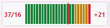
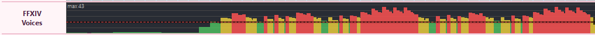
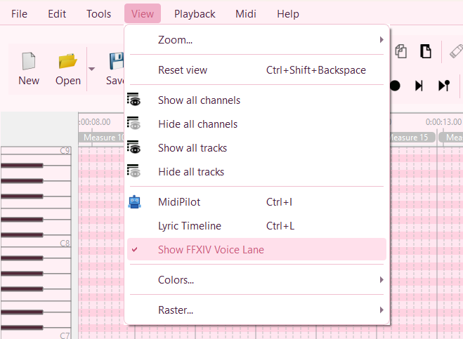
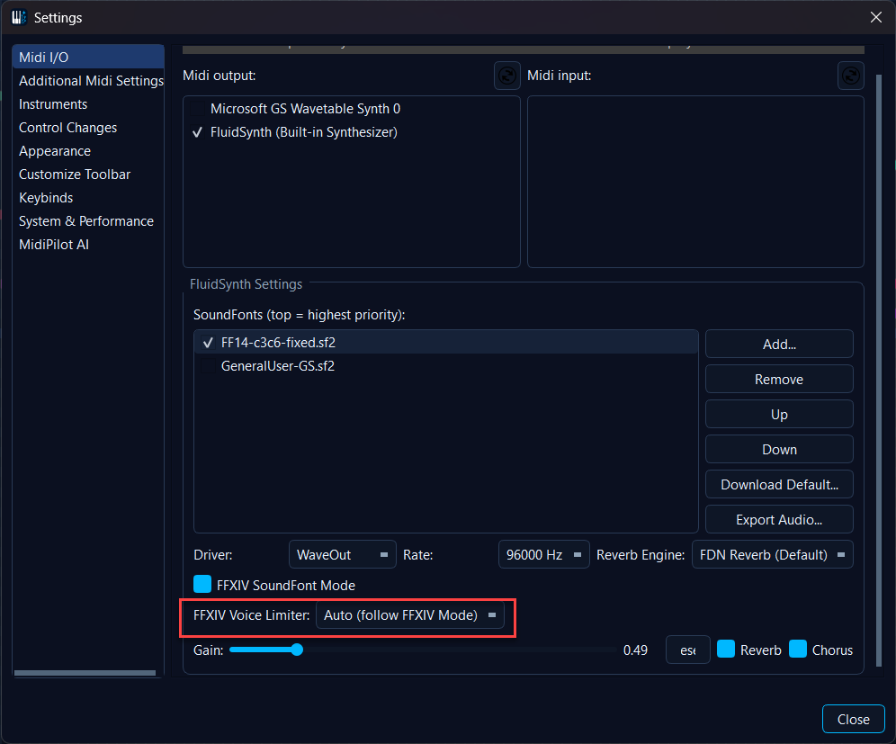

🎮 FFXIV Voice Limiter
The FFXIV Voice Limiter is a passive analyser plus two visualisers that surface voice-count and note-rate hot-spots in real time so you can see where your arrangement would be silently degraded by the FFXIV Bard Performance audio engine before you ever upload it to the game.
💡 Find it in: the toolbar gauge

, the optional voice-load lane under the velocity strip, and the MidiPilotanalyze_voice_load agent tool.
The widgets are hidden when FFXIV SoundFont Mode is off so non-FFXIV users pay zero perf cost.
{kind=link}

FFXIV Voices panel + voice-load lane: live load against the 16-voice ceiling.
Why this exists - the constraints
In FFXIV's Performance Mode the in-game audio engine has hard, observable ceilings that silently truncate or drop notes from the player's arrangement. The MIDI looks fine; what comes out of the game does not. Three constraints matter for arranging:
| Constraint | Limit | Symptom in-game |
|---|---|---|
| Polyphony / voice ceiling | 16 active voices total, across the whole ensemble (not per player) | Older notes get cut off; wind / brass becomes inaudible during dense passages. |
| Note rate | ≤ 14 notes / second per channel, ~50 ms minimum interval (locked-60 fps assumption) | Notes beyond the rate are dropped or merged. |
| Range | C3..C6 (MIDI 48..84) | Out-of-range notes are auto-transposed by the client. |
| No native chords | One key press = one note; arpeggiate or use Power Chord instruments | Stacked notes on the same key collapse. |
The FFXIV Channel Fixer already enforces range and the Bard accuracy path enforces percussion behaviour. What was missing - and what this phase adds - is predictive feedback on the polyphony ceiling and the note-rate ceiling while you are editing.
Thresholds - relaxed from the documented hard ceiling
The visualiser uses three colour bands. They are intentionally relaxed compared to the documented 16-voice hard ceiling because empirical in-game testing (and MogNotate observations) shows the engine tolerates short bursts above 16 thanks to release-tail truncation. The analyser still reports the raw count and overflow against the documented 16 for the AI tool.
≤ 18 voices - Green
Comfortable headroom. The game will reliably play every note.
19 - 23 voices - Yellow
Borderline. Short bursts usually survive; sustained passages may drop tail notes.
≥ 24 voices - Red
Game will drop notes audibly. Thin out the chord, arpeggiate, or move a voice to a different player.
| Measurement | Value |
|---|---|
| Documented voice ceiling | 16 voices total (used as the dashed red line + AI overflow reference) |
| Note-rate ceiling | 14 notes / second / channel |
| Note-rate sliding window | 250 ms (configurable 100 ms - 1000 ms) |
| Yellow-warn threshold | 13 voices (configurable 1 - 15) |
| Re-analyse debounce | 100 ms after Protocol::actionFinished |
| Live-update cadence (during playback) | ~30 Hz, piggybacking on the playback timer |
The toolbar gauge
A compact ~120×25 px LED-style widget that sits next to the Lyric Visualizer and MIDI Visualizer:
- Left readout -
N / 16, the live voice count at the playhead. - 24-segment LED meter - stereo-style bar that fills green → yellow → red as voice count rises. A dedicated tick mark sits at the documented 16-voice ceiling.
- Right overflow slot -
+0(green) or e.g.+3(red), the count of voices over the documented ceiling at the playhead. - Tooltip -
Voices: 14 / 16 (max in piece: 22 at bar 17 beat 3.2). - Click - toggles the piano-roll voice-load lane.
- Auto-bind - visible only when FFXIV SoundFont Mode is on. Same idiom as the existing X|V toolbar widget from 1.5.2.
{kind=link}
The voice-load lane
A companion lane to the existing velocity strip, toggled from View → Show Voice Lane (or by clicking the toolbar gauge):
{kind=link}

View → Show Voice Lane - the same toggle is fired by clicking the toolbar gauge.
- Auto-scaled Y axis - bars rise as voice count rises, sampled per pixel column (or per beat, whichever is finer at the current zoom).
- Soft / red threshold colouring - bars are green ≤ 18, yellow 19-23, red ≥ 24, matching the gauge.
- Per-channel rate hot-spot strip - thin red verticals mark any 250 ms window that exceeds 14 notes/s on a single channel.
- Dashed red ceiling line - drawn on top with a subtle halo and a 16 label so the documented hard ceiling is always visible no matter what zoom you're at.
- Click a column - scrolls / cursors the matrix to that tick, same idiom as the protocol panel's Jump to event entries.
The analyser engine
A headless FfxivVoiceAnalyzer backs all three surfaces (gauge, lane, AI tool). It
runs once per file (cached, debounced) and again on every
Protocol::actionFinished - so a multi-event paste or agent tool call only
triggers one rebuild.
| Output | What it is |
|---|---|
voiceCountAtTick |
Sparse (tick, count) snapshots taken at every NoteOn/NoteOff transition across
the 16 standard MIDI channels (skips meta channels 16/17/18). Built in a single pass. |
peakInBar(barIndex) |
Convenience derived from the snapshots, used by the bar-level overlays. |
RateHotspot[] |
{ channel, startTick, endTick, notesPerSecond } entries for any 250 ms
sliding window exceeding 14 notes/s on a single channel. |
globalPeak |
The overall maximum simultaneous voice count anywhere in the file. |
Sample-tail simulation
A naive NoteOn..NoteOff window under-reports voice load on plucked instruments (harp,
lute, archlute, all guitar variants) because the audible release tail still occupies an engine
voice after the OffEvent has already fired. FfxivVoiceLoadCore::sampleTailMs()
extends each note's audible window by an estimated release per General-MIDI family and per drum
pitch so the visualiser matches what you actually hear in-game (and what MogNotate measures).
This is why the gauge can read higher than a quick mental sum of overlapping NoteOns -
it's the right answer.
Drum-channel handling
A kick + snare hit on CH9 is two simultaneous voices in the in-game engine, not one. CH9 is counted exactly like every other channel; no special-casing.
Settings
Settings → MIDI → FFXIV → Voice Limiter:
{kind=link}

The Voice Limiter group sits inside the FFXIV settings block and auto-binds to FFXIV SoundFont Mode - turn FFXIV Mode on and the analyser plus both visualisers come along; turn it off and they go away again. A manual override is remembered per install.
| Setting | Default | Notes |
|---|---|---|
| Enable Voice Awareness widgets | On (when FFXIV Mode is on) | Auto-bound to FFXIV SoundFont Mode the same way the bard-accurate-mode auto-bind from
1.5.3 (BARD-MODE-001) works. Manually unchecking it while FFXIV Mode is on persists the
OFF choice (FFXIV/voiceLimiter/userOverride = "off"); clearing the override or
a fresh install restores the auto-bound behaviour. |
| Voice ceiling | 16 | Read-only - matches the game. |
| Yellow-warn threshold | 13 | Spinner 1-15. |
| Note-rate ceiling | 14 notes/s | Read-only. |
| Note-rate window | 250 ms | Spinner 100-1000 ms. |
All persisted under FFXIV/voiceLimiter/*.
AI tool - analyze_voice_load
The agent gets a read-only analyze_voice_load(start_tick, end_tick) tool that
returns:
globalPeak- the highest simultaneous voice count in the range.overflowRanges[]- tick ranges where simultaneous voices exceed 16.rateHotspots[]- per-channel{channel, startTick, endTick, notesPerSecond}entries that breach the 14 notes/s/channel ceiling.
When FFXIV Mode is on, the agent's activeConstraints banner pins the reminder
"FFXIV: ≤16 voices, ≤14 notes/s/channel, C3..C6" so the model self-checks its
output against the engine ceilings every turn and rewrites dense passages without needing to be
asked.
Demo
Live voice load updates as the playhead moves through a dense ensemble piece.